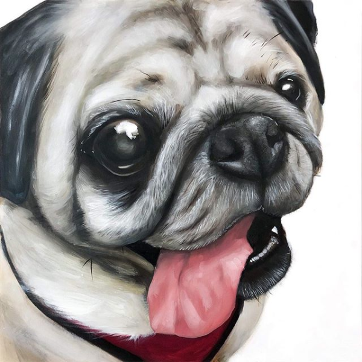
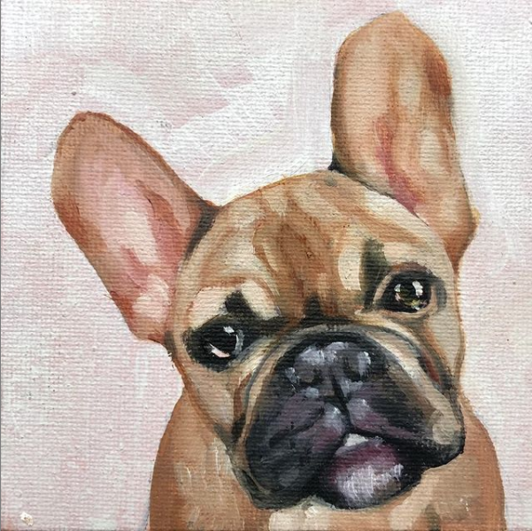
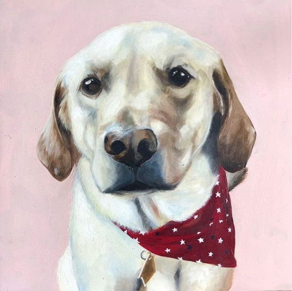
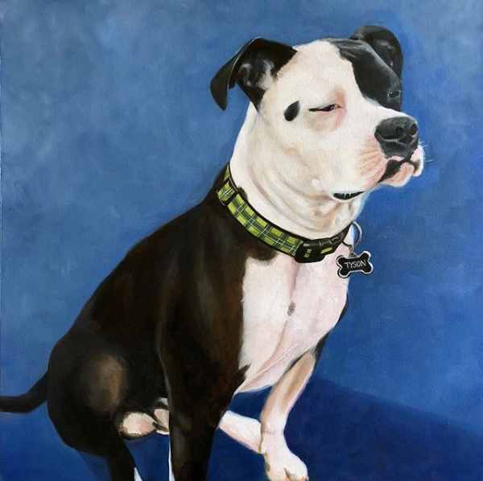

Need to make a lasting impression? Whether you're looking for just a logo or more, I can make it happen.
learn more
Graphic Design
Good design is compassionate, accessible and, inclusive.
learn more
Illustration
Looking for a little extra flourish to go with your materials?
learn more
Portraiture
Your animal side-kick deserve a portrait of themselves.
learn more
portfolio
See my recent works from select clients.




about
What would you like to know?
steph tan
is an integrated designer and illustrator based in Queens. She graduated from Parsons School of Design with a BFA degree in Illustration. Steph is also a USPAP compliant Fine & Decorative Art Appraiser, with a specialization in 20th Century American & European Paintings. She sustains herself on audio entertainment and is active in the podcasting community. She also is a contributing member of The Crybaby Collective– a group of New York-based female artists.
Parsons School of Design, Illustration BFA
Originally from Washington, DC
Currently in New York, NY
connect
Interested? Drop me a line, I'm always up for a coffee & chat.